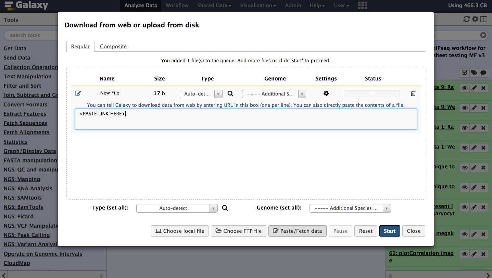
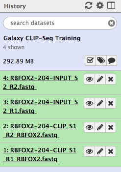
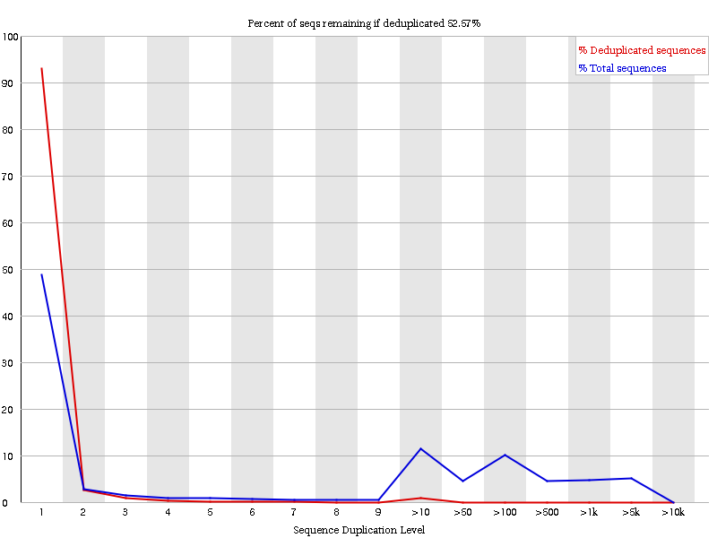
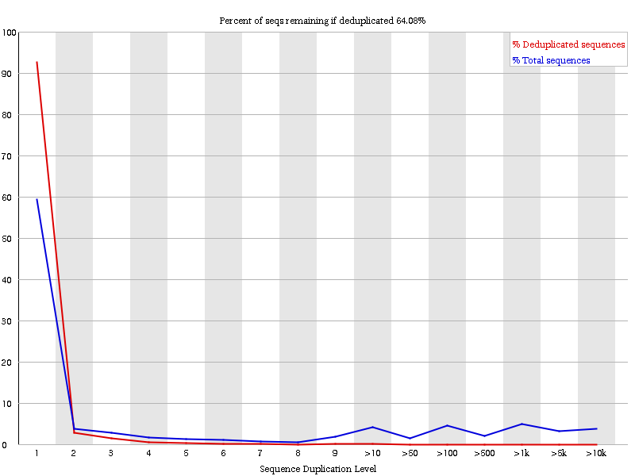
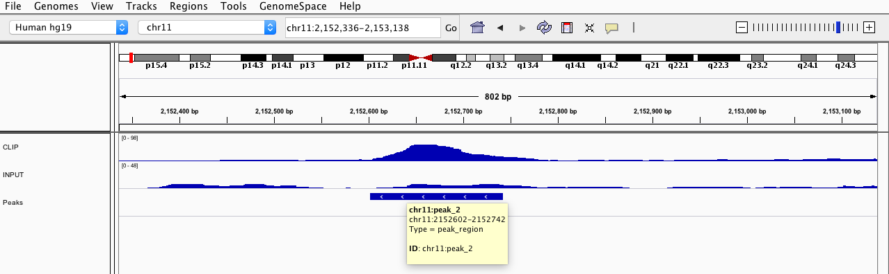
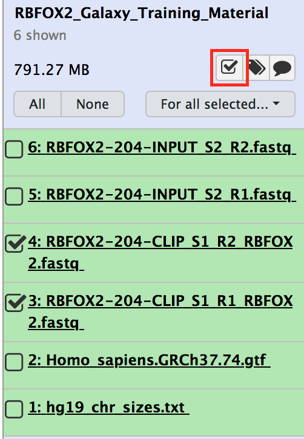
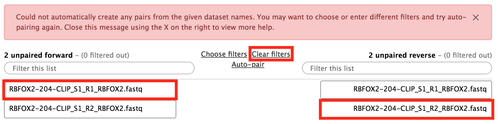
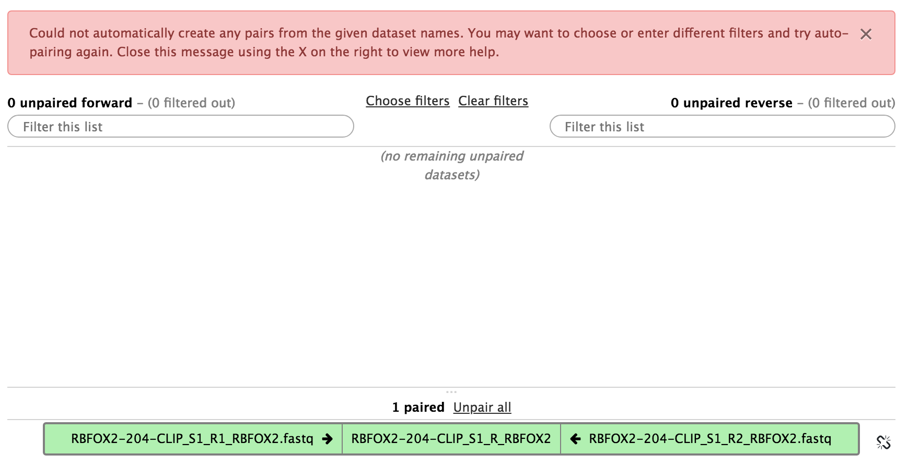

The eCLIP data provided here is a subset of the eCLIP data of RBFOX2 from a study published by Nostrand et al. (2016). The dataset contains the first biological replicate of RBFOX2 CLIP-seq and the input control experiment (FASTQ files). The data was changed and downsampled to reduce data processing time, consequently the data does not correspond to the original source pulled from Nostrand et al. (2016). Also included is a text file (.txt) encompassing the chromosome sizes of hg38 and a genome annotation (.gtf) file taken from Ensembl.
Table 1: Data from RBFOX2 CLIP-Seq and control experiment which we are going to use in this tutorial from a study published by Nostrand et al. (2016). PE stands for a paired-end read library. Hep G2 is a human liver cancer cell line. Replicate is the number of the biological replicate. Stranded means, if the read-library is strand specific, i.e., in a specific forward-reverse direction.
RBFOX2 is a relevant development and tissue-specific splicing factor with the conserved motif TGCATG. It binds mainly in introns. We therefore want to process and validate the data from human liver cancer cells (HepG2) to find this conserved motif and in the process identify the function of RBFOX2 as well as describe the function of the targeted RNA.
Step 1: Get data
hands_on Hands-on: Data upload
Create and name a new history for this tutorial.
tip Tip: Creating a new history
Click the new-history icon at the top of the history panel
If the new-history is missing:
Click on the galaxy-gear icon (History options) on the top of the history panel
Open the Galaxy Upload Manager (galaxy-upload on the top-right of the tool panel)
Select Paste/Fetch Data
Paste the link into the text field
Press Start
Close the window
By default, Galaxy uses the URL as the name, so rename the files with a more useful name.
Figure 1: Data can be imported directly with links.
Figure 2: Imported datasets will appear in the history panel.
Step 2: Quality Control
As for any NGS data analysis, CLIP-seq data must be quality controlled before being aligned to a reference genome. For more detailed information on NGS quality control, check out the tutorial for NGS here. One crucial thing to check for CLIP-Seq data is the sequence duplication levels. PCR duplications occur naturally in any NGS experiment during the PCR amplification of the genetic material. CLIP-Seq is prone to many PCR duplicates because of the sparse material that is obtained during a CLIP-Seq experiment resulting in high PCR cycles in many occasions. More information about the problem of PCR duplicates can be found here.
Report with FastQC
hands_on Hands-on: Quality control with FastQC
FastQCtool: Run the tool FastQC on each FASTQ file to assess the quality of the raw data. An explanation of the results can be found on the FastQC web page.
tip Tip: Running a tool on multiple data files
You can run this tool - and many other tools - on all the FASTQ files at once!
To do this, first select the “Multiple datasets” icon (two stacked pages) under the “Input FASTQ file” heading in the FASTQC Tool Form, then shift+click to select multiple FASTQ files.
Check the Sequence Duplication Levels plot.
Figure 3: Sequence duplication levels before de-duplication; The y-axis represents the portion of reads with the specific duplication level. An exact sequence match is needed to detect a duplicated read. The blue line shows the duplication level distribution of the full sequence set. The red line depicts an ideal curve after a de-duplication step (duplicates are filtered out).
question Questions
Has our data high sequence duplication levels?
Why is there still a small spike in the red line?
What does the headline tell you?
solution Solution
Yes, ideally we would see a blue line with one high peak in a duplication of one, everything else should be zero.
Spikes in the red line come from different duplication levels in the original data (blue line).
The headline states an expected value of reads that would remain after a de-duplication step. A high percentage suggest, that no de-duplication step is needed. This should also correspond with the red line.
Step 3: Removal of Adapters, Barcodes and Unique Molecular Identifiers (UMIs)
It is often necessary to remove adapter and barcodes sequences as well as UMIs. Adapters (or primers) are needed for PCR amplification and sequencing in a standard NGS protocol. Unfortunately, it might happen during the sequencing that the machine does not stop at the read end and sequences through the adapter as well. That is why, we need to check if our reads contain those sequences which we are then cutting out. Barcodes on the other hand are especially designed for a read library and intentionally sequenced. Sometimes experiments are sequenced at the same time which is called multiplexing. Multiplexing allows for a better data normalisation and comparison. The barcodes are then used to divide the un-multiplexed data set into the individual read libraries. (Note: Our data is already de-multiplexed, i.e., we do not have to take barcode sequences into account.) UMIs are similar to barcodes but these sequences are unique for each read. UMIs were introduced since iCLIP to deal with the high duplication levels of a CLIP experiment. Because each read contain an UMI, PCR duplicates of that read also contain the same UMI, which makes it possible to fuse all reads with the same UMI.
Removal of adapter sequences with Cutadapt
In this task we are going to remove two 3’ and two 5’ adapters from the reads (Note: The eCLIP protocol uses more adapter sequences, for more information take a look here). Because Cutadapt can only process one site of the read pair, we have to trigger Cutadapt twice, i.e., for the forward and the reverse pair.
hands_on Hands-on: Adapter Removal
Cutadapt (v. 1.6)tool with the following parameters:
“Additional modifications to reads”: No Read Modifications
comment Why do we remove 5 bp from the first read?
In eCLIP it can happen that the sequencing goes over the first read into the UMI, which is at the 3’ end of the first read. The UMI is 5 bp long in our data. To make sure our first read in the read pair does not contain the UMI, we simply remove the last 5 bp from it. The UMI that we actually need for the de-duplication is located on the 5’ end of our second read in the read pair.
comment Do the same thing for the input control data set.
If you processed the RBFOX2 FASTQ dataset then do the same thing for the input control dataset or vice verca.
Removal of UMIs with UMI-tools extract
In this task we are going to remove the UMI at the 5’ end of the second read. We are then going to use the removed UMIs later on to de-duplicate our read library and account for PCR duplicates.
hands_on Hands-on: UMI Removal
UMI-tools extracttool with the following parameters:
“Library type”: Paired-end
param-file“Reads in FASTQ format”: FASTQ R2 (output from the secondCutadapt call tool)
param-file“Reads in FASTQ format”: FASTQ R1 (output from the secondCutadapt call tool)
“Barcode on both reads?”: Barcode on first read only
“Use Known Barcodes?”: No
“Method to extract barcodes”: String
“Barcode pattern for first read”: NNNNN
“Is the barcode at the 5’ end?”: Yes
“Output log?”: Yes
“Enable quality filter?”: No
comment Do the same thing for the input control data set.
If you processed the RBFOX2 FASTQ dataset then do the same thing for the input control dataset or vice verca.
question Questions
What is the meaning of the barcode pattern?
solution Solution
The symbol “N” defines our UMI. The symbol “X” are nucleotides that we would reattach to our read. It is important to note, that the UMI can be encompassed by an in-line barcode, that is why we need two distinct symbols “N” and “X”.
Step 4: Aligning Reads to a Reference Genome
To determine where DNA fragments originated in the genome, the sequenced reads must be aligned to a reference genome. This is equivalent to solving a jigsaw puzzle, but unfortunately, not all pieces are unique. In principle, you could do a BLAST analysis to figure out where the sequenced pieces fit best in the known genome. However, this can take a couple of weeks. Nowadays, there are many read alignment programs. STAR is one of them that works well with CLIP-Seq data. STAR is able to use genome as well as transcriptome data. This ability is handy, since CLIP-Seq generates transcriptome data, consequently we have to take RNA processing steps like splicing events into account.
Aligning with RNA STAR
hands_on Hands-on: Alignment
RNA STARtool with the following parameters:
“Single-end or paired-end reads”: Paired-end (as individual datasets)
“Custom or built-in reference genome”: Use a built-in index
“Reference genome with or without an annotation”: use genome reference with builtin gene-model
“Select reference genome”: Homo sapiens (hg38+GRCh38.87)
“Count number of reads per gene”: No
“Would you like to set output parameters (formatting and filtering)?”: Yes
“Extra SAM attributes to include”: All
“Include strand field flag XS”: Yes -- and reads with inconsistent and/or non-canonical introns are filtered out
“Would you like to set additional output parameters (formatting and filtering)?”: Yes
“Other parameters (seed, alignment, limits and chimeric alignment)”: Extended parameter list
In “Alignment parameters”:
“Use end-to-end read alignments, with no soft-clipping?”: Yes
“Would you like to set chimeric alignment parameters?”: No
comment Note: We have switched R1 and R2 as forward and reverse reads!
We need to do that because the eCLIP read library is organised in a way such that the first mate (R1) is in reverse and the second mate (R2) in forward orientation.
comment Soft-Clipping vs Hard-Clipping
Clipping is a way to deal with low quality bases during the alignment step. In Soft-Clipping the bases at the 5’ and 3’ end of the read are not part of the alignment. In Hard-Clipping the bases at the 5’ and 3’ end of the read are not part of the alignment and will be completely removed from the read sequence in the BAM file.
comment Do the same thing for the input control data set.
If you processed the RBFOX2 FASTQ dataset then do the same thing for the input control dataset or vice verca.
question Questions
Can you think of a reason why we disabled the soft-clipping?
solution Solution
In eCLIP the cross linking position should be at the beginning of the second read. If we would enable soft-clipping, we would add potential bases with low quality at the end of our second reads that would blur our cross linking position and we would lose precision to detect potential binding regions of RBFOX2.
Step 5: De-Duplication
Lets return to the UMIs which we extracted in step three. Since we have mapped the reads to our reference genome, we can now identify which reads might be duplicated or not. The UMI-tools will help us again in this matter.
De-duplication with UMI-tools deduplicate
hands_on Hands-on: De-Duplication
UMI-tools deduplicatetool with the following parameters:
param-file“Reads to deduplicate in SAM or BAM format”: bam (output of RNA STARtool)
“extract_umi_method”: Read ID
“Separator between read id and UMI.”: _
“Method used to identify PCR duplicates within reads.”: Identify clusters based on hamming distance and resolve networks by using the node counts
“Edit distance threshold”: 1
“BAM is paired end”: Yes
comment What is the purpose of the method we have chosen for the de-duplication?
UMI-tools deduplication has several methods. The method we have picked is called the adjacency method. For detailed information have a look at method descriptions of UMI-tools. For a brief explanation: the method fuses reads together when they have the same coordinates and the same UMI. However, sequencing errors can occur in the UMI. Thus, in the adjacency method we fuse also UMIs that differ in a maximal number of characters and where we identify a lot of copies, i.e., the method creates clusters of nodes, a node for each individual UMI, and fuses these nodes based on the hamming distance and read counts.
comment Do the same thing for the input control data set.
If you processed the RBFOX2 bam file then do the same thing for the input control bam or vice verca.
question Questions
Why are we doing the de-duplication after the read mapping?
What is the edit distance threshold?
solution Solution
Because we need the coordinates of the reads to see if some reads have the same coordinates and the same UMI.
UMI-tools dedulication uses the hamming distance between UMIs to detect sequencing errors in the UMIs. A hamming distance of 1 means, that two UMIs are the same if they differ in maximal one character. If two characters are different, then these are two disparate UMIs.
Quality check of the de-duplication with FastQC
hands_on Hands-on: De-duplication quality control
FastQCtool with the following parameters:
param-file“Short read data from your current history”: bam (output of UMI-tools deduplicatetool)
View the Sequence Duplication Levels plot.
Figure 4: Sequence duplication levels after de-duplication.
question Questions
What can you see, if you compare the duplication levels to our first quality control in step two?
Why are the duplication levels still high?
solution Solution
We have reduced the duplication levels.
The duplication levels are still high, because we don’t have the full data sets (reads are missing).
Step 6: Second Quality Control
In this section we check the quality of our mapped reads and see if our samples are correlated or not. It is actually not really necessary for our data sets, because of the small sample size. However, for bigger analyses it is wise to check if some samples may encompass major quality problems.
Check the read coverage with plotFingerprint
hands_on Hands-on: Check the read coverage
plotFingerprinttool with the following parameters:
“Sample order matters”: No
“Bam file”: both bam files (output of UMI-tools deduplicatetool)
“Show advanced options”: yes
“Bin size in bases”: 100
“Show advanced output settings”: no
View the output image.
Figure 5: Graph of IP strength from plotFingerprint. The y-axis represents the fraction of the total number of reads. `plotFingerprint` randomly samples genome regions (bins) of a specified length and sums the per-base coverage that overlap with those regions. The x-axis therefore orders the bins from lowest coverage to highest coverage. The plot here is too idealistic which is because of our small data set.
comment What does this graph represent, especially for CLIP-Seq data?
It shows us how good the CLIP Signal compared to the control signal is. Now be careful, CLIP-Seq experiments involve either a total RNA control or a negative control with another protein that unspecifically binds RNA (e.g., IgG). An ideal total RNA control (input control) like ours with perfect uniform distribution of reads along the genome/transcriptome (i.e. without enrichments) and infinite sequencing coverage should generate a straighter, diagonal line. On the other hand, a very specific and strong CLIP enrichment will be indicated by a prominent and steep rise of the cumulative sum towards the highest rank. Yet, a negative control often has the same sharp slope at the end as a CLIP experiment but often depicts a straighter, diagonal line in the beginning like the input control.
question Questions
How do (or should) input datasets differ from CLIP datasets?
What do you think about the quality of the CLIP experiment?
solution Solution
We expect that the control (input) has a different, more straighter, diagonal slope than the CLIP experiment.
Both the CLIP experiment and the control are closely related. It is maybe wise to check the correlation of the two samples.
For additional information on how to interpret plotFingerprint plots, read the information here.
Correlation between Samples
We have seen that our input control and our CLIP experiment might be strongly correlated, meaning, that our potential RBFOX2 binding regions are not truly enrichment when comparing to a our control.
We are therefore going to further check the correlation between our control and CLIP experiment.
hands_on Hands-on: Assessing correlation between samples
multiBamSummarytool with the following parameters:
“Sample order matters”: No
“Bam file”: both bam files (output of UMI-tools deduplicatetool)
“Choose computation mode”: Bins
“Bin size in bp”: 1000
“Show advanced options”: no
plotCorrelationtool with the following parameters:
param-file“Matrix file from the multiBamSummary tool”: outFile (output of multiBamSummarytool)
“Correlation method”: Spearman
“Plotting type”: Heatmap
“Skip zeros”: Yes
“Image file format”: png
View the output image.
Figure 6: Heatmap of correlation matrix generated by plotCorrelation. The y-axis shows you on the left site the histogram of the clustering. The colored scale depicts the correlation value. Like `plotFingerprint`, `multiBamSummary` randomly samples genome regions (bins) of a specified length and sums the per-base coverage that overlap with those regions. The correlation between these bins is then calculated for each pair of samples. An ideal plot would result in two disparate clusters: one for the biological replicates of your CLIP-Seq experiment and one for the replicates of your control. A bad plot would happen if your control and CLIP-Seq experiment end up in one cluster, which means that they are closely related and something went wrong in the laboratory.
question Questions
Why do we want to skip zeros in plotCorrelation?
What happens if the Spearman correlation method is replaced by the Pearson method?
What does the correlation tell you about our data?
solution Solution
Large areas of zeros would lead to a correlation of these areas. The information we would get out of this computation would be meaningless.
The clusters would be different.
Despite the result of plotFingerprint, we see that the correlation between our experiment and control is not nearly as significant as we thought.
Step 7: Peak Calling
Peak calling is one of the most important steps in the data analysis of CLIP-Seq, next to mapping. There exist a variety of peak callers like PEAKachu, PureCLIP or Piranha each with different underlying assumptions and parameters. It is difficult (nearly impossible) to find a generic solution for every data set. We are going to use PEAKachu to find possible binding motifs for our data. PEAKachu is able to incorporate control data in contrast to other peak callers like Piranha, thus allowing to find binding regions that are significantly enriched in comparison to our control (input) data.
Peak calling with PEAKachu
hands_on Hands-on: Peak
calling
PEAKachutool with the following parameters:
param-file“Experiment Libraries”: bam RBFOX2 (output of UMI-tools deduplicatetool)
param-file“Control Libraries”: bam Input (output of UMI-tools deduplicatetool)
“Pairwise Replicates”: No
“Paired End”: Yes
“Maximum Insert Size”: "200"
“Select Mode”: Adaptive
“Normalisation Method.”: DESeq2
“Mad Multiplier”: "0.0"
“Fold Change Threshold”: "2.0"
“Adjusted p-value Threshold”: "0.05"
Take a look at the MA plot of PEAKachu.
Figure 7: MA plot of PEAKachu. MA stands for M (log ratio) and A (mean average). It shows you the general trend of the log2 fold-change in dependence of the average mean of the expression rate of the peaks. Points in a straight, diagonal line symbolise the behavior of the logarithm which is often visible for low expressed peaks, because one read can change the fold-change quite drastically. The blue lines depict the normalisation constants. Read dots are significant peaks. It is hard to tell what a good MA plot would look like. Even a small number of significant peaks can be enough, depending on the biological question you ask.
comment Adjusted p-value Threshold
P-values are calculated by DESeq2. A low p-value represent a significantly enriched binding region. Since we are doing thousands of independent hypothesis testings, we have to correct for significant p-values that happen just by chance. DESeq2 uses the Benjamini-Hochberg procedure as a correction. For more information read here.
comment Fold-Change Threshold
The fold-change is calculated by DESeq2 and is actually a log2 fold-change. Because we want significantly enriched binding regions, we basically search for peaks that are at least four times higher in our CLIP experiment than in our control.
question Questions
What happens if we decrease or increase the log2 fold-change threshold of 2.0?
Take a look into the peak output file of PEAKachu. Why aren’t there any p-values?
Is the log2 fold-change alone a good measurement to validate our peaks? Maybe the MA plot helps you to figure out this question?
solution Solution
If we would decrease the log2 fold-change threshold then we would get more peaks. However, we would also increase the number of false positives, i.e., peaks that are not significantly enriched.
If we would increase the log2 fold-change threshold, then we would decrease the number of peaks and possible false positives. However, we would also increase the number of false negatives, i.e., we would lose potentially interesting binding sites.
PEAKachu works mainly with replicated data, because DESeq2 calculates only p-values for data sets where the experiment and control have at least two replicates. This feature makes statistically sense, because data sets without replicates are not representative enough to make general assumptions, but for the purpose of demonstration we are going to ignore this fact.
Yes and no. A significant fold-change with high read counts (read coverage) might be enough to validate a peak. However, some peaks can also be covered by very few reads and still have a high fold-change, e.g., log2(4/1). It is for you to decide if a fold-change like log2(4/1) is enough evidence that the binding region is significantly enriched.
Step 8: Peak Analysis
In this last step, we are going to analyse the peaks that we obtained from the previous step. This should give you a small glimpse of what someone might be interested in. Therefore we want to answer in this step the following questions:
1) Which sequential motifs are potentially conserved in our binding regions, i.e., what are potential binding motifs of RBFOX2? 2) Which RNAs does RBFOX2 preferentially bind and what are their biological function?
Motif detection with MEME-ChIP
Lets first find out which sequence motifs RBFOX2 might preferentially bind to.
hands_on Hands-on: Motif detection
Text reformattingtool with the following parameters:
param-file“File to process”: tabular (output of PEAKachutool)
param-file“BED/VCF/GFF file”: bed (output of Text reformattingtool)
“Genome file”: hg38_chr_sizes.txt (file from your history)
“Choose what you want to do”: Increase the BED/GFF/VCF entry by the same number base pairs in each direction.
“Number of base pairs”: 20
Extract Genomic DNAtool with the following parameters:
param-file“Fetch sequences for intervals in”: bed (output of SlopBedtool)
“Interpret features when possible”: Yes
“Choose the source for the reference genome”: locally cached
“Using reference genome”: hg38
“Select output format”: fasta
MEME-ChIPtool with the following parameters:
param-file“Primary sequences”: FASTA (output of Extract Genomic DNAtool)
“Sequence alphabet”: DNA
“Options Configuration”: Advanced
“Limit of sequences to pass to MEME”: 100
“Should subsampling be random?”: Yes
“Seed for the randomized selection of sequences”: 123
“E-value threshold for including motifs”: 0.05
“Search given strand only”: Yes
“What is the expected motif site distribution?”: Zero or one occurances per sequence
“Minimum motif width”: 5
“Maximum motif width”: 20
“Maximum number of motifs to find”: 20
“Stop DREME searching after reaching this E-value threshold”: 0.05
“Stop DREME searching after finding this many motifs”: 5
“I certify that I am not using this tool for commercial purposes.”: Yes
View the MEME-ChIP html.
Figure 8: Plot of a sequence motif. The x-axis of the sequence plots represents the nucleotide position of the motif. The y-axis stands for the total information (uncertainty) of each position and thus stands for the probability that the nucleotide at a certain position is the specific letter (for DNA: T,C,G,A). Bigger letters stand for a higher probability. For more information read [here](https://en.wikipedia.org/wiki/Sequence_logo).
comment MEME and DREME
MEME and DREME are two motif finding tools that MEME-ChIP uses. More information about theses tools can be found here.
comment What is the purpose of SlopBED?
PEAKachu might underestimate the length of the binding regions, because the actually protein-RNA-binding concentrates on the cross linking site that is one nucleotide long. Thus, we extend the peaks from PEAKachu by 20 bp at each site. A true conserved binding motif will not be affected by it, if we make the region to wide.
comment What is the meaning of the E-value?
The E-value represents the expected number of times we would find our sequence motif in a database (peak file), just by chance. This means, that a small E-value correspond to a very significant motif, because the expected number we would find that motif in our peak file just by chance is very low. Other sequences like repeats will have a high E-value on the other hand.
question Questions
Click on the link under the column Discovery/Enrichment Program for two of the motifs one from MEME and one from DREME. What is the site-count for the most significant motif? How many sequences have we checked for MEME and for DREME? What is the fraction of sequences that covered that motif? (MEME-ChIP version 4.11.2)
Have we found the motif TGCATG?
solution Solution
For the result with MEME-ChIP version 4.11.2: MEME site count = 37, total sequences = 100, fraction = 37%; DREME site count = 103, total sequences = 247, fraction = 41.7%.
Yes.
Functional analysis with RNA Centric Annotation System
Lets move to the next step and find out where these motifs might come from, i.e., which kind of RNAs RBFOX2 preferentially bind to. For that we will use the RNA Centric Annotation System. Run the tool and then try to answer the subsequent questions.
hands_on Hands-on: Functional analysis
RNA Centric Annotation System (v. 1.5.4)tool with the following parameters:
“Genome Version”: hg38
param-file“Target regions in BED format”: bed (output of SlopBedtool)
param-file“Reference annotation in ENSEMBL GTF format”: Homo_sapiens.GRCh37.74.gtf (file from your history)
“Run annotation.”: Yes
“Run GO term enrichment”: Yes
“Run gene set enrichment”: No
“Run motif search”: No
“Downsampling (N)”: "0"
View the output html of RNA Centric Annotation System
question Questions
What is the main target region of RBFOX2 (e.g., cds, exon, 5’ UTR)? Does this confirm the literature.
From which cellular compartments do the targets come from?
Where does RBFOX2 mainly bind around the intron-exon boundaries and total transcript?
solution Solution
Introns and transcripts. Yes.
Actin filaments, actin cytoskeleton, cell projection part etc.
Around the exon-intron boundaries more at the 3’ ends of transcripts.
Additional Step
Sometimes it is wise to take a look at individual peaks; maybe to check the peak calling algorithm or the general quality of the read coverage of the called peaks. We will cover the motivation behind this step in this section and explain why it would be wise to further inspect your results. For this we take the de-duplicated reads in step 5 and the called peaks in step 7 to take a deeper look inside our data.
Generating bigWig files of the alignment ends
We will first generate coverage files that gives us a better visualization for our read coverage along the genome. SAM or BAM files can be used too, but they are often to big and harder to handle, if you try to inspect the read coverage. Therefore we are going to generate a bigWig (binary form of a BedGraph) file.
hands_on Hands-on: Task description
Extract alignment endstool with the following parameters:
param-file“Alignments in SAM or BAM format”: bam (output of UMI-tools deduplicatetool)
SortBEDtool with the following parameters:
param-file“Sort the following BED file”: bed (output of Extract alignment endstool)
“Sort by”: chromosome, then by start position (asc)
Create a BedGraph of genome coveragetool with the following parameters:
param-file“The BAM or BED file from which coverage should be computed”: bed (output of SortBEDtool)
“Report regions with zero coverage”: No
“Treat split/spliced BAM or BED12 entries as distinct BED intervals when computing coverage.”: No
“Calculate coverage based on”: both strands combined
Wig/BedGraph-to-bigWigtool with the following parameters:
param-file“Convert”: bedgraph (output of Create a BedGraph of genome coveragetool)
“Converter settings to use”: Default
comment Do the Same thing for the input control data set.
If you processed the RBFOX2 bam dataset then do the same thing for the input control dataset or vice verca.
Inspection of peaks and aligned data with IGV
Next we are going to use the generated bigWig files of our alignment ends and the peaks we obtained from PEAKachu and investigate the read coverage of our called peaks with IGV. This is an alternative to Trackster. For more information about IGV follow the tutorial.
Try to answer the questions for this hands-on. It will give you an idea why it would be wise to inspect the read coverage of the peaks.
hands_on Hands-on: IGV
Open IGV on your local computer.
Choose as a reference genome hg38.
Download and drag-and-drop the following files from galaxy into IGV:
peaks_annotations.gff of PEAKachu tool
CLIP.bigWig of Wig/BedGraph-to-bigWig tool
INPUT.bigWig of Wig/BedGraph-to-bigWig tool
Inspect the peaks (e.g., chr11:peak_2 chr11:2152602-2152742)
Figure 9: Inspection of a peak in IGV.
question Questions
What are the ideal conditions that PEAKachu tool will call a peak.
What are the challenges a peak caller has to face? What defines a peak (significantly enriched region)?
Imagine you find a region that should be definitely be a peak but your peak caller does not spot it. What can you do?
solution Solution
High read coverage in the region for the CLIP experiment and low read coverage in the region for the input control.
As simply explained in the previous answer, a peak (significantly binding region) should be significantly enriched in the CLIP experiment and not in the input control. However, the difficulty is to find out if two adjacent peaks are two distinct peaks or just one big peak. Furthermore, very small bumps can also be just an artifact of a way bigger peak. In addition, a high read coverage in the CLIP experiment and not in the input control does not necessarily mean that we have an enriched region. The significance depends on the background (noise) of our data. A good normalisation is therefore crucial.
From question two you might know now, that this is not an easy question. Every peak caller has different parameters that can be optimised for your type of problem. If you find a spot that you think should be certainly a peak, than play around with the parameters and options of the peak caller, or switch to another algorithm.
Conclusion
In this tutorial you imported raw eCLIP data, evaluated the quality of the read library before the read processing, removed adapter sequences and unique molecular identifier from the reads, aligned the reads to a reference genome, de-duplicated the read library, analysed the quality of the de-duplication and read mapping, found significantly enriched regions (peaks) for the protein RBFOX2 and finally scrutinised the peaks on potential conserved motifs and target RNAs. In addition, you took a short glimpse on the quality of the peak calling. Keep in mind, the read library for CLIP-Seq data might have different formats for different protocols (e.g, PAR-CLIP). However, the overall analysis you learned in this tutorial stays nearly the same.
Remark to Workflow
In order to use the workflow linked to this tutorial, you have to create two lists of dataset pairs; one for you control and one for your CLIP experiment.
tip Tip: Creating a list of dataset pairs.
Click on the check box icon in the history.
Figure 10: Select data sets for your list of data set pairs.
Select the data files for your experiment (or control).
Select For all selected… below the check box icon.
Select Build List of Dataset Paris
In the new window, if you see no files and a warning, then select Clear filters. After that, organise the files into forward-reverse pairs.
Figure 11: Organise the data sets into pairs.Figure 12: Result after organising the data sets into pairs.
Give the list a name and click on the button Create list.
keypoints Key points
Sophisticated analysis of CLIP-Seq data is possible using tools hosted by Galaxy.
Analysis of the datasets needs multiple methods to assess the quality of the data and to answer the biological question of interest.
CLIP-Seq data varies from protocol to protocol, thus flexible changes to the data anylsis are required which is supported by Galaxy.
By using the sharable and transparent Galaxy platform, data analyses can easily be shared and reproduced.
Useful literature
Further information, including links to documentation and original publications, regarding the tools, analysis techniques and the interpretation of results described in this tutorial can be found here.
Feedback
Did you use this material as an instructor? Feel free to give us feedback on how it went.
Batut et al., 2018 Community-Driven Data Analysis Training for Biology Cell Systems 10.1016/j.cels.2018.05.012
details BibTeX
@misc{transcriptomics-clipseq,
author = "Florian Heyl and Daniel Maticzka and Bérénice Batut",
title = "CLIP-Seq data analysis from pre-processing to motif detection (Galaxy Training Materials)",
year = "2021",
month = "01",
day = "06"
url = "\url{/training-material/topics/transcriptomics/tutorials/clipseq/tutorial.html}",
note = "[Online; accessed TODAY]"
}
@article{Batut_2018,
doi = {10.1016/j.cels.2018.05.012},
url = {https://doi.org/10.1016%2Fj.cels.2018.05.012},
year = 2018,
month = {jun},
publisher = {Elsevier {BV}},
volume = {6},
number = {6},
pages = {752--758.e1},
author = {B{\'{e}}r{\'{e}}nice Batut and Saskia Hiltemann and Andrea Bagnacani and Dannon Baker and Vivek Bhardwaj and Clemens Blank and Anthony Bretaudeau and Loraine Brillet-Gu{\'{e}}guen and Martin {\v{C}}ech and John Chilton and Dave Clements and Olivia Doppelt-Azeroual and Anika Erxleben and Mallory Ann Freeberg and Simon Gladman and Youri Hoogstrate and Hans-Rudolf Hotz and Torsten Houwaart and Pratik Jagtap and Delphine Larivi{\`{e}}re and Gildas Le Corguill{\'{e}} and Thomas Manke and Fabien Mareuil and Fidel Ram{\'{\i}}rez and Devon Ryan and Florian Christoph Sigloch and Nicola Soranzo and Joachim Wolff and Pavankumar Videm and Markus Wolfien and Aisanjiang Wubuli and Dilmurat Yusuf and James Taylor and Rolf Backofen and Anton Nekrutenko and Björn Grüning},
title = {Community-Driven Data Analysis Training for Biology},
journal = {Cell Systems}
}
congratulations Congratulations on successfully completing this tutorial!
 Florian Heyl
Florian Heyl Daniel Maticzka
Daniel Maticzka Bérénice Batut
Bérénice Batut